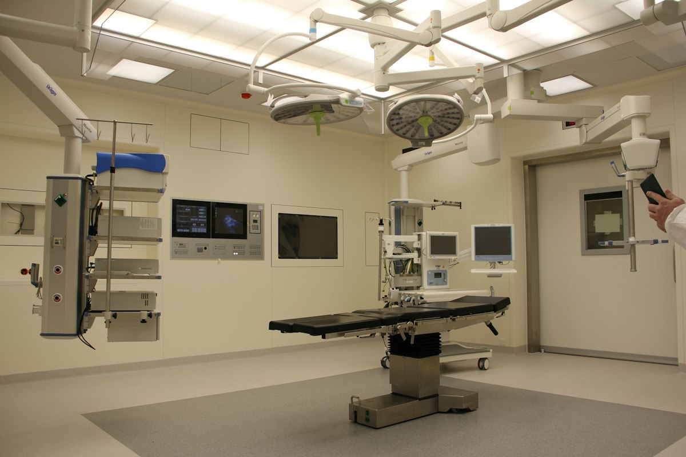
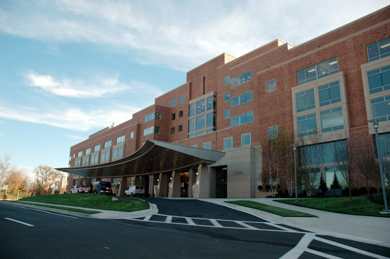
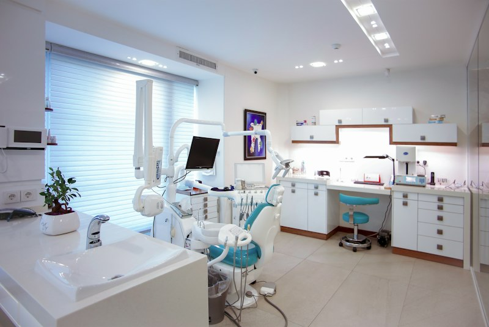

Functional Planning
Organising spaces according to intended clinical utilization, critical departmental adjacencies, emergency triage access, and operational workflow requirements.

Healthcare architecture requires a disciplined balance of clinical workflow efficiency, infection control zoning, and compassionate spatial environments. From tertiary hospitals to specialized outpatient clinics, the built environment directly influences how care is delivered, how staff navigate high-stress procedures, and how patients experience recovery.
At Artech Design (Aspirations Architects Engineers), our practice brings over three decades of integrated architectural planning and structural coordination across South India. We design healthcare facilities that satisfy rigorous statutory, fire, and bio-safety standards while optimizing intuitive wayfinding, natural light penetration, and adaptable service infrastructure.
Meticulous planning of clean and contaminated circulation corridors, positive-pressure air zoning, and sterile transfer locks.
Seamless structural coordination for heavy diagnostic equipment, central medical gas piping, and specialized hospital filtration.
Critical architectural, operational, and environmental parameters that inform modern healthcare design and engineering.
Organising spaces according to intended clinical utilization, critical departmental adjacencies, emergency triage access, and operational workflow requirements.
Designing separated pathways for patients, clinical staff, logistics, and sterile supplies, ensuring barrier-free universal accessibility and intuitive wayfinding.
Enhancing acoustic comfort, introducing calming natural daylight, maintaining visual privacy, and providing restorative rest zones for medical personnel.
Recognising complex technical prerequisites, including specialized MEP filtration, radiation shielding, heavy floor loadings, and strict statutory building codes.
Illustrative project categories demonstrating the application of healthcare architecture principles across varying clinical scales.

Comprehensive acute-care facilities planned for complex inpatient nursing units, surgical suites, emergency triage, and multi-departmental service flow.

Day-care surgery centres, polyclinics, and consultation suites designed for rapid patient turnaround, comfortable waiting zones, and efficient administration.

Specialized imaging facilities, laboratories, and radiotherapy suites engineered with structural radiation shielding and cleanroom HVAC filtration.
Long-term care facilities, physiotherapy institutes, and therapeutic centres focused on barrier-free mobility, natural gardens, and quiet healing environments.
A methodical four-stage architectural framework ensuring technical compliance, functional clarity, and seamless project execution.
Understand the project's clinical brief, bed-capacity objectives, site parameters, zoning requirements, and specific client operational goals.
Explore departmental zoning, emergency and patient circulation flows, and initial architectural concept layouts tailored to the operational brief.
Refine the design while coordinating structural engineering, specialized MEP systems, medical gas routes, and fire safety compliance into a unified scheme.
Support the agreed project process through comprehensive statutory approval packages, technical working drawings, and construction phase coordination.


Connect with our team in West Mambalam, Chennai to discuss your healthcare planning, site requirements, and architectural brief.